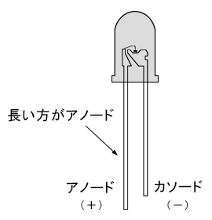
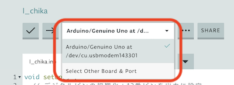
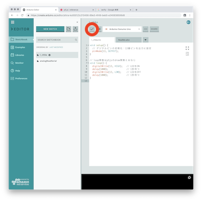
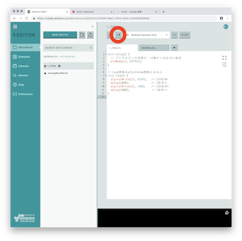

事前準備
LEDには極性がある⬇︎⬇︎
電源を入れていない状態で，
アノードを13番ピン
カソードをGND
に差し込む
しゃきょう！
void setup() {
// デジタルピンの初期化：13番ピンを出力に設定
pinMode(13, OUTPUT);
}
// loop関数はp5jsのdraw関数とおなじ
void loop() {
digitalWrite(13, HIGH); // LEDをON
delay(1000); // 1秒待つ
digitalWrite(13, LOW); // LEDをOFF
delay(1000); // 1秒待つ
}
プログラムをアップロードする
小さいとはいえ，Arduinoはパソコンのようなもの
プログラムをアップロードしないと動かない
- PCとArduinoをつなぐ
- Arduinoって書いてあるポートを選択
（見えない人はプラグインが上手く入っていない可能性がある）

- コードのVerify!(検証する) 
- アップロード！ 
- 上手くいけば，LEDがフラッシュした後，１秒ごとに明滅する
- Hello, Physical World!

task
- 明滅のタイミングを変えてみる
- モールス信号で"SOS"送ってみる